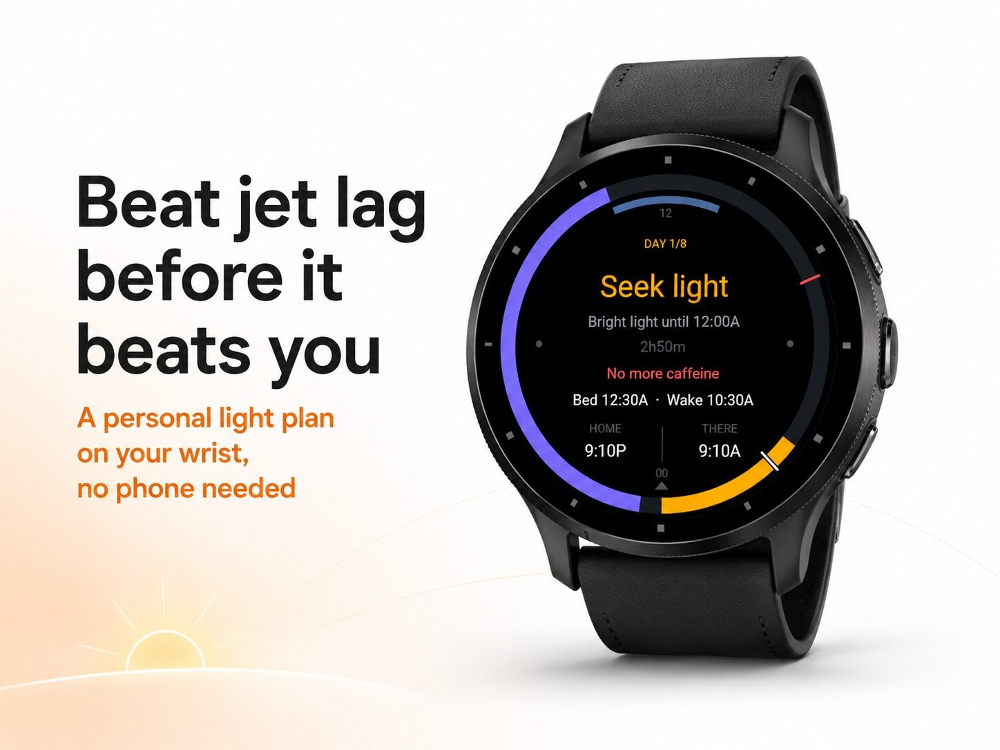
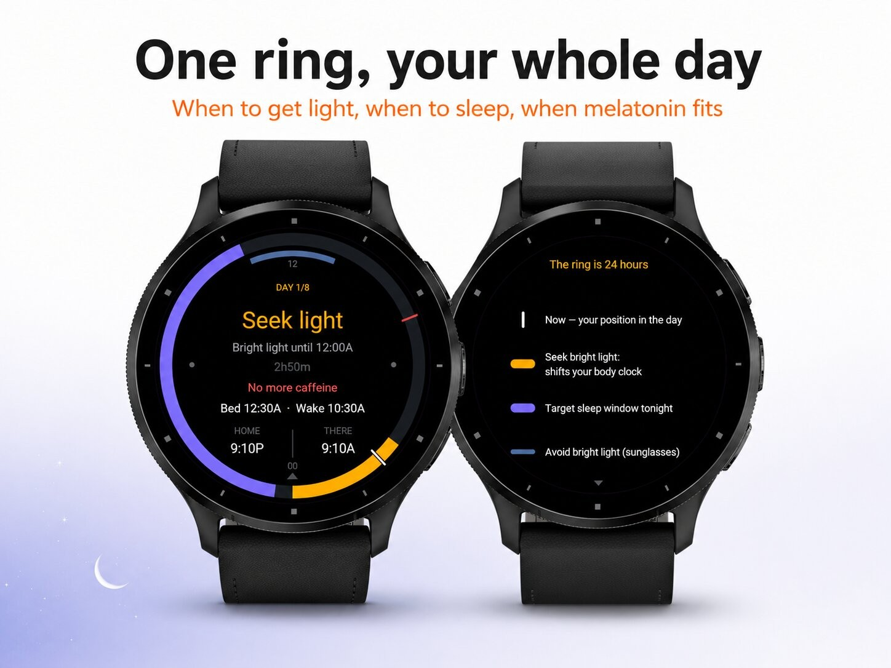
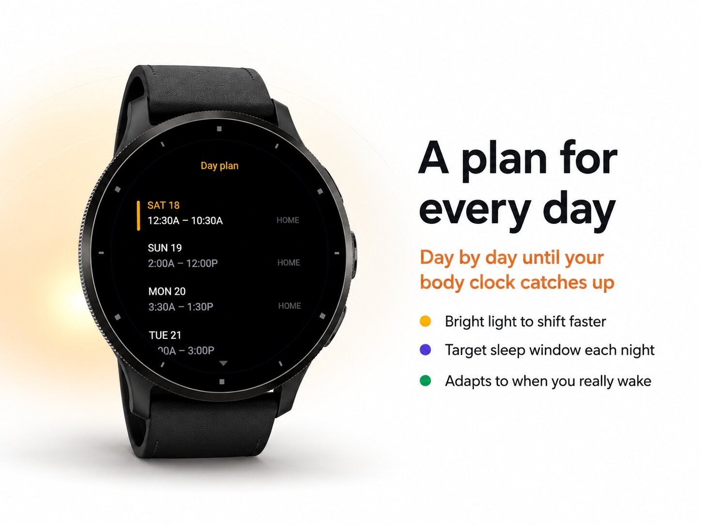
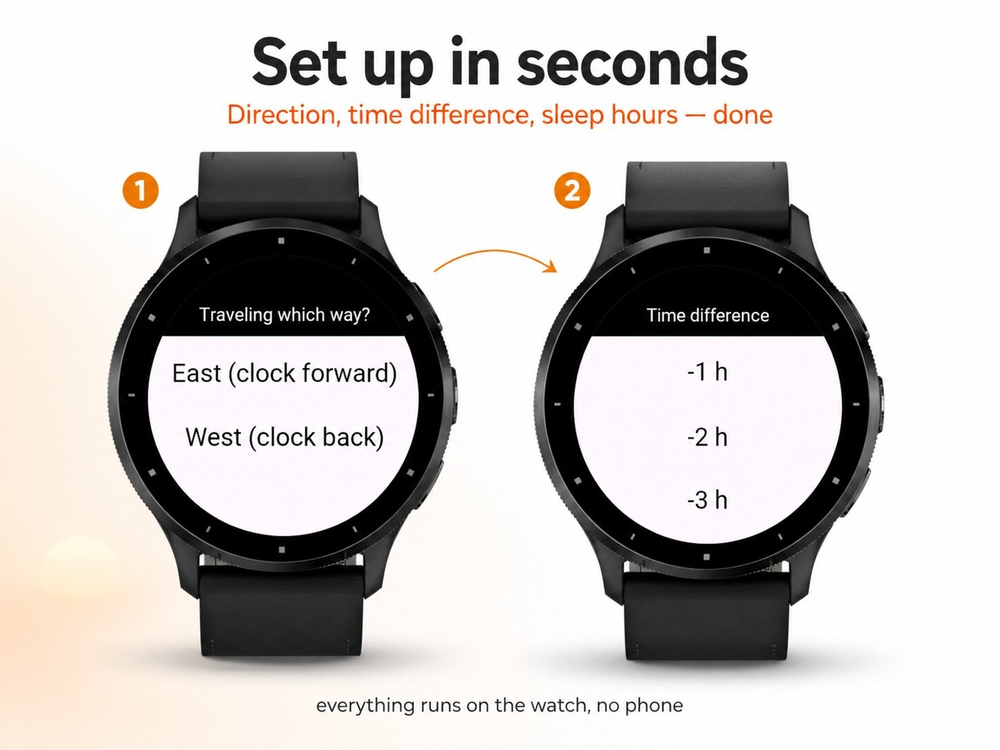

Health & habits · Device app
Jet lag plan with light and sleep times.




JetShift — beat jet lag before it beats you.
Your body clock doesn't reset just because you landed. JetShift builds a personal, science-based plan to shift it faster and turns the confusing part — when to do what — into a single glance at your wrist.
Set up your trip in a few taps: which way you're flying, the time difference, and your usual sleep hours. From there JetShift maps out your days and shows everything on a clean 24-hour dial: tonight's target sleep window, when to get bright light (this is what actually moves your body clock), when to reach for sunglasses, plus your melatonin moment and last-coffee cut-off. The center always tells you what to do right now and for how long, with your home and destination clocks side by side.
It even stays correct while you cross time zones mid-trip, and it works completely on the watch — no phone, no account, no battery-draining background tracking.
Smarter than a fixed schedule
Every morning JetShift asks one quick question — when did you actually wake? — and re-tunes the rest of your plan to your real progress instead of blindly counting days. Slept in? It adjusts. Woke early? It adjusts. Optional reminders can nudge you at each key moment, even with the app closed.
Features
Fly Monday, feel human by Wednesday. JetShift does the timing so you don't have to.
JetShift gives general light and sleep guidance, not medical advice. Melatonin is regulated differently per country — check the local rules and talk to a pharmacist or doctor. Don't follow any advice when it isn't safe for what you're doing.